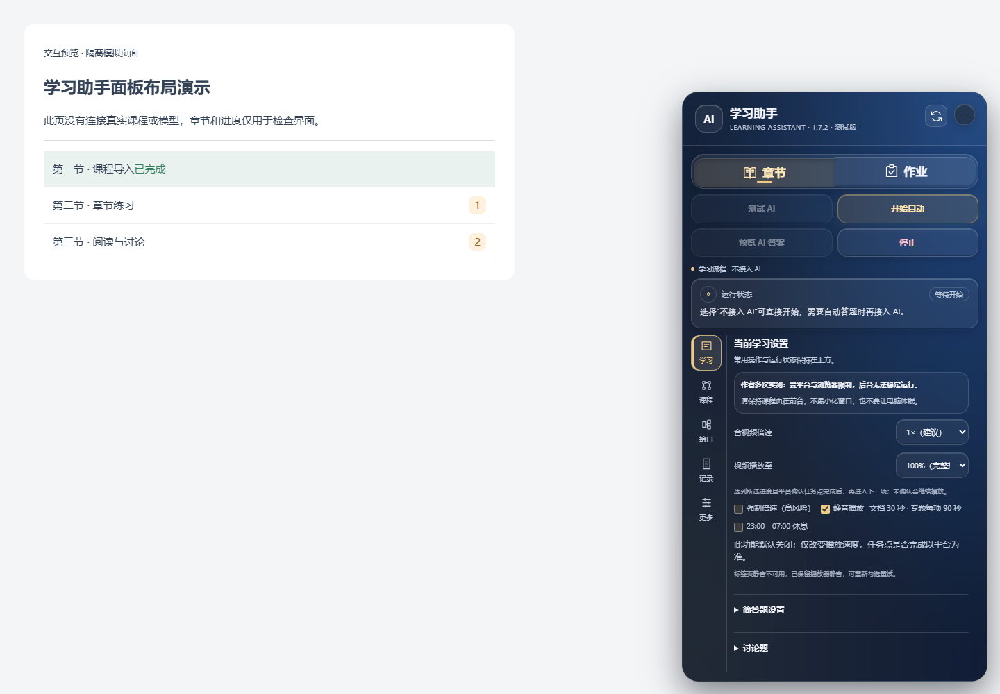

课程页保持前台
选中正在学习的课程标签，让浏览器窗口可见，不要最小化，也不要让电脑锁屏或休眠。切换标签后，浏览器可能降低检查弹题、结果和导航的频率；视频画面还在动，也不代表这些检查都正常执行。
作者多次实测，后台无法稳定运行。脚本没有保证后台持续运行的方案。想边做别的事边观察课程，可以参考独立窗口摆放。
音视频按顺序处理
同页多段音视频会依次处理，播放后核对各自的任务点。音视频不需要配置 AI；视频中途弹出的题目需要 AI 才能自动作答。
静音和倍速在“学习”区设置。音频按完整播放处理，视频可以选择播放至 90% 或 100%，默认是 100%。

倍速能改变什么
可选 1×、1.1×、1.2×、1.25×、1.5×、1.75×、2×、4×、8×、16×。选择非 1× 时会先显示友情提示，确认后才采用所选速度。
部分课程会核对实际累计观看时间。视频更快播完，任务点仍可能没有完成，之后还要等待或重播。不要用进度条代替平台的学习记录。
播放器原本限制倍速时，建议保持 1×。强制倍速只能尝试改变播放器速度，不能保证缩短平台认可的学习时间。
90% 也要等任务点
选择视频 90% 后，脚本会多留一点进度余量，并核对对应的平台任务点；未确认完成时继续播放。这个选项不适用于音频。
视频自然结束但任务点还未完成时，脚本会按有界恢复规则等待或尝试重播；仍无法确认的内容会留下待复核记录。跳过不等于完成，脚本不会把黄色任务点改成绿色。
一节里有多个任务时，要分别核对。一个视频变绿，不代表本节的文档、测验或其他视频也完成了。
普通文档和专题阅读
PDF、Word 预览采用文档流程：默认停留 30 秒，并滚动到可识别的阅读器底部。跨域、未加载或陌生阅读器可能无法完成，需要查看面板提示。
“去阅读”打开的专题采用另一套计时：逐项进入目录，每项累计前台、有焦点的 90 秒。切走后不累计有效停留，读完再回到原课程处理剩余内容。
滚到底、计时结束和目录颜色变化都不能代替平台任务点确认。专题打开的新标签也需要启用同一份脚本。
夜间休息和定时休息
正式 1.7.7 默认启用北京时间 23:00—次日 07:00 的夜间休息，可在“学习”区取消。普通章节自动运行进入夜休时，面板可能显示“07:00 后自动继续”；夜间点击开始，也会显示预约提示。请以面板当前提示确认是否有预约。
手动停止和预览会清除自动接续意图。讨论任务进入夜休后不自动恢复；独立作业遇到夜休会停止，之后需要显式开始，不能自动续填或续交。出现验证码时也要人工处理后再开始。
“页面与学习设置”里的定时休息是另一项功能，默认关闭；开启后每轮暂停，休息结束需要手动继续。它不等于上面的夜间预约。